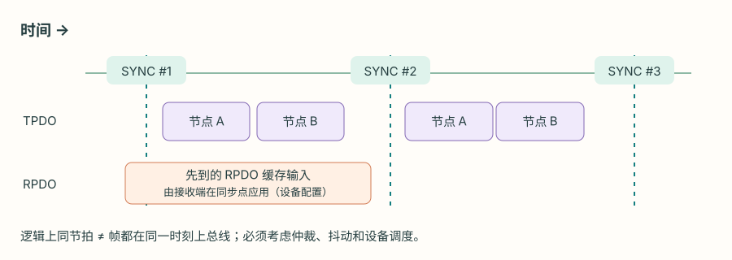
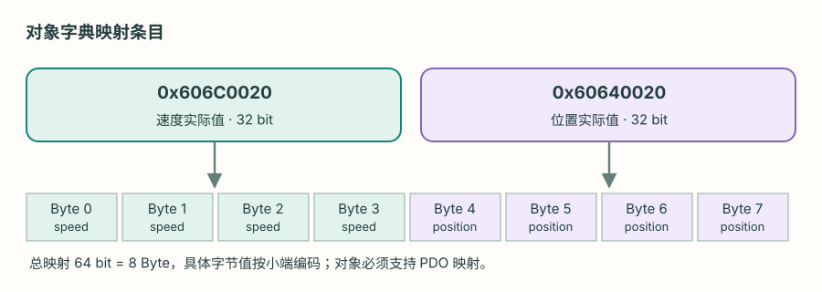

PDO：同步的是节拍，不是每一帧的发送瞬间
把对象字典的变量装入 8 字节，再区分映射、COB-ID、传输类型与 SYNC；用可复算的负载例子判断配置是否现实。
同一个 SYNC 触发多个节点，为什么波形不可能“同时上总线”？
假设四台驱动器收到同一个 0x080 SYNC，四台设备都准备上报状态。它们不可能在同一条经典 CAN 总线上把四个 PDO 帧同时送完：帧要通过 CAN 仲裁依次占用总线。SYNC 提供的是逻辑节拍与设备采样/应用数据的共同参考点，而不是让所有 PDO 数据帧零延迟传输。
理解 PDO，必须同时回答三个独立的问题：哪组对象被映射到负载？哪个 CAN-ID 对应这路 PDO？它在什么事件或 SYNC 节拍上发送/应用？第三个问题必须与前两个配套，不能只看“同步 / 异步”二选一。

TPDO 与 RPDO：按设备视角命名，而非“主站”视角
TPDO（Transmit PDO）是某节点生产的数据；RPDO（Receive PDO）是某节点消费的数据。PDO 是基于 CAN-ID 的生产者/消费者通信，可能一对一也可能一对多；它不是“默认一对一”，也没有每帧对应的 SDO 式协议确认。
| 对象 | 通常的默认标识符（Node-ID=5） | 映射与通信参数 |
|---|---|---|
| TPDO1 | 0x180 + 5 = 0x185 | 映射 0x1A00，通信 0x1800 |
| RPDO1 | 0x200 + 5 = 0x205 | 映射 0x1600，通信 0x1400 |
| SYNC | 0x080（默认） | 不是某个设备的 PDO；通常单独由 SYNC 生产者发送 |
以上是预定义连接集的默认值。配置了非默认 COB-ID 的网络、部分功能可选的对象或不同设备 Profile，不能直接套用；首先读取 EDS 与对象字典。经典 CAN 每个 PDO 数据帧最多携带 8 字节。
PDO 映射：如何把 64 位对象精确装进 8 字节
以支持 CiA 402 对象的驱动器为例：0x606C:00 是 Velocity actual value（32 位）、0x6064:00 是 Position actual value（32 位）。0x6041:00 则是 16 位 Statusword，不能误写成速度。设备的数据单位、范围、访问权限以及是否允许 PDO 映射必须核对 EDS / 文档。
高 16 bit 是对象索引，中 8 bit 是子索引，低 8 bit 是映射长度（单位 bit）；如 0x606C0020 = 0x606C:00，32 bit。

两条映射条目合计 32 + 32 = 64 bit。若速度原始值 1000，位置原始值 -2000（仅演示有符号 32 位），则 TPDO 负载为：
COB-ID 0x185, DLC 8
E8 03 00 00 | 30 F8 FF FF
+1000(int32) | -2000(int32)
# 只是原始值；要变成 rpm / mm/s / mm 等须有设备单位与标定信息。真正的配置难点：改映射时不能让半成品 PDO 工作
如果设备支持可变或动态 PDO 映射，常见步骤是在预操作状态禁用目标 PDO、清空有效映射数、写入条目、恢复映射数、设置通信参数并重新启用。下列是对象层顺序示意，不是可对任意设备盲写的 CAN 报文脚本：
# 使用 SDO 操作节点 5，假设设备允许改写 TPDO1
# 0x1800:01 是 COB-ID；保留原本 ID/其他位，仅按设备规则置 bit31 禁用
0x1800:01 <- old_COB_ID | 0x80000000
0x1A00:00 <- 0
0x1A00:01 <- 0x606C0020 # 速度 32 bit
0x1A00:02 <- 0x60640020 # 位置 32 bit
0x1A00:00 <- 2 # 两项，总 64 bit
0x1800:02 <- 1 # 示例：每次 SYNC 触发一次同步 TPDO
0x1800:01 <- old_COB_ID & 0x7FFFFFFF # 恢复有效；应保留设备所需控制位
# 进入 Operational 后验证 TPDO 的 COB-ID/DLC/数据与时序在实际设备上，禁用顺序、映射是否可写、SDO 的操作状态约束以及是否需要保存通信配置，都应遵照 EDS 与厂商手册。不要用未经确认的 bit31 写操作覆盖 COB-ID 的其他标志位。更不要在运转中的执行器上直接改控制 PDO 映射。ADI 的 PDO 映射应用笔记。
同步、事件、定时：由 Transmission Type 决定语义
TPDO 的传输类型通常位于通信参数对象 0x1800:02；RPDO 对应 0x1400:02。在经典 CANopen 语境下，可抓住以下类别（设备支持集可能不同）：
| 类型 | 核心行为 | 思考重点 |
|---|---|---|
0 | 同步非周期：应用事件满足后，TPDO 在后续 SYNC 相关时刻发送 | 数据变化 ≠ 立即上总线 |
1…240 | 同步周期：TPDO 按每 N 次 SYNC 的配置节拍发送 | N 是 SYNC 次数，不是“毫秒” |
254 | 异步，制造商定义的事件 | 具体事件语义查设备文档 |
255 | 异步，设备/应用 Profile 定义事件 | 可与事件定时器等配合，能力依设备 |
252/253 | 历史实现中可见与 RTR 相关的模式 | 现代栈可能不实现或不推荐，绝不能默认可用 |
0x1800:03 是 TPDO inhibit time（抑制时间，常按 100 µs 单位）；0x1800:05 是 event timer（常按 ms）；0x1800:06 是可选的 SYNC start value，不是“事件计数器”。事件定时器与抑制时间如何配合，以及某些传输类型是否使用它们，依实现而定。
若 SYNC 周期为 10 ms，传输类型设为 3，理想逻辑发送节拍为每三个 SYNC，即约 30 ms；真正帧上线的时间还受总线仲裁、排队和软件执行影响。
小实验：先算出带宽下界，再谈实时性
以经典 11 位数据帧、8 数据字节为例，不计位填充、错误帧和重传，含帧间隔的基本长度可按 111 bit 估算。若 50 个节点每 10 ms 各发送一次这样的 TPDO，500 kbit/s 总线的理论下界负载为：
仅这一类流量就已经不可能全部按目标周期发送，实际带宽压力还更大。解决思路是减少不必要的周期上报、合理设计映射与优先级、分配同步相位并实测最坏延迟，而不是相信“PDO 比 SDO 快所以不会拥塞”。
交互实验：把两个 CiA 402 原始值装入 PDO
小端 int32 TPDO1 编码器
本地模拟，不接真实硬件；固定演示两项映射 606C0020、60640020。
每次收到 SYNC 都一定会收到 4 个 TPDO 吗？
不一定。TPDO 的类型可能为 0 或 N=3 等；设备是否在线、是否处于 Operational、PDO 是否启用，以及总线仲裁都会改变观察结果。
能否用 RTR 远程帧请求所有 TPDO？
不能。历史经典 CANopen 对某些 RTR 模式有定义，但具体设备可不支持，现代实现常将 252/253 视为保留或禁用。优先使用明确配置的同步/事件型 PDO。
资料与适用边界
本章讨论的是经典 CANopen、11 位默认标识符与经典 CAN 的 8 字节 PDO；CANopen FD、特殊设备 Profile 和具有专有映射约束的驱动器需要另行验证。
- CANopenNode PDO Tutorial：通信参数、映射字编码、传输类型实现范围。
- Analog Devices AN-076：设备映射步骤与同步/异步类型。
- Beckhoff Process Data Objects：SYNC 语义、历史 RTR 类型与触发分类。
- CAN in Automation — Process Data Objects：CANopen PDO 的概念与职责。
下一章切换协议体系：J1939 的 PGN、SPN 与地址声明规则不直接沿用 CANopen 的对象字典与 PDO 映射。